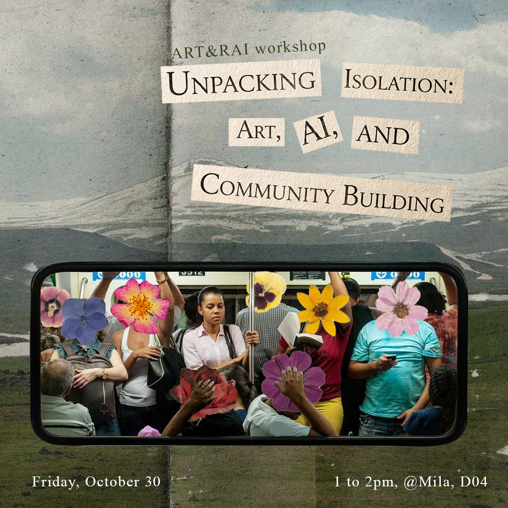
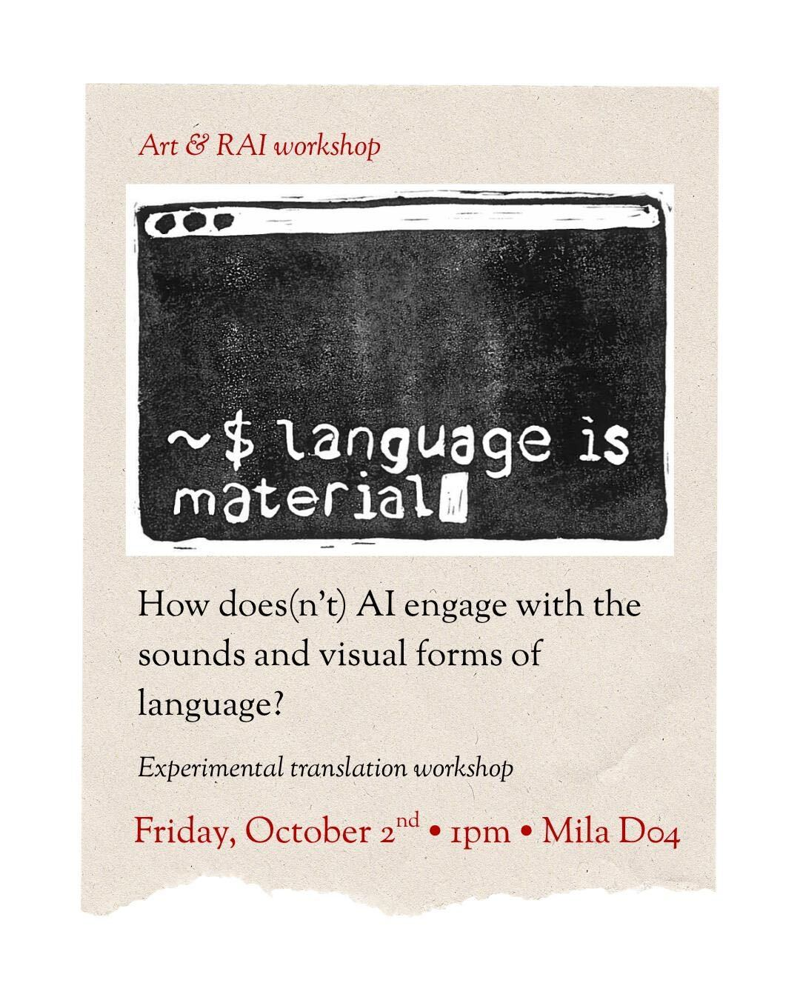
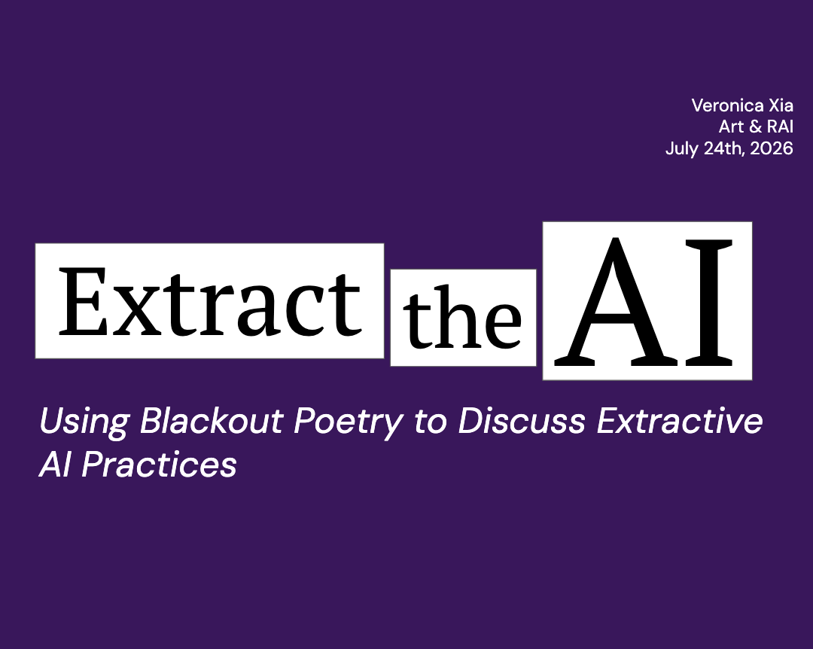

Events I organize in and around McGill and Mila!

Unpacking Isolation: Art, AI, and Community Building
A collage workshop and discussion exploring how the modern loneliness epidemic has been commodified, and how we can leverage community building and AI to forge meaningful human connection
Date: Oct 30th, 2026
Organized by: Taïna Mueth

language is material
How does(n't) AI engage with the sounds and visual forms of language> Experimental translation workshop
Date: Oct 2nd, 2026
Organized by: Shira Abramovich
Artificial Connoisseur
You will make a small art piece of your own, then join our art salon where AI holds court as the critic. We’ll discuss what happens when AI has the power to evaluate human meaning
Date: Aug 21st, 2026
Organized by: Chong Hu

Extract the AI
We will be writing blackout poetry to discuss the extractive practices of AI development.
Date: July 26th, 2026
Organized by: Veronica Xia